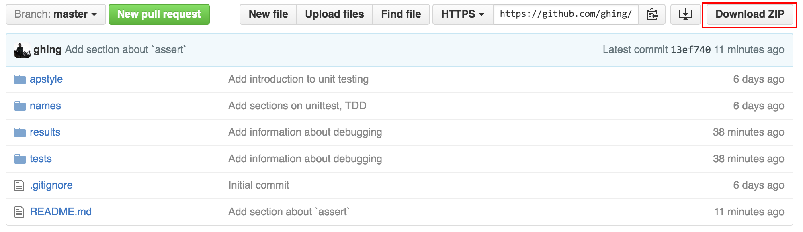

Geoff Hing (geoffhing@gmail.com, @geoffhing)
These slides: http://ghing.github.io/nicar2016-python-testing-debugging-slides
The excercises repo: https://github.com/ghing/nicar2016-python-testing-debugging-exercises/
git clone https://github.com/ghing/nicar2016-python-testing-debugging-exercises.git
cd nicar2016-python-testing-debugging-exercises
or go to https://github.com/ghing/nicar2016-python-testing-debugging-exercises/ and
Raise your hand by tweeting me @geoffhing and sharing a link to https://gist.github.com/ or http://pastebin.com/.
You can also check your work
git checkout solutionsWe'll use the CLI for Python's included unittest package.
python -m unittest tests.test_basic
python -m unittest tests.test_basic.NoFailuresTestCase
python -m unittest tests.test_basic.NoFailuresTestCase.test_true_is_true
Let's run a test that causes an unhandled exception in our code.
python -m unittest tests.test_result_loader
Traceback (most recent call last):
File "tests/test_result_loader.py", line 13, in test_load_bad_json
results = loader.load(sample_json)
File "results/__init__.py", line 5, in load
parsed = json.loads(s)
File "/usr/local/Cellar/python/2.7.11/Frameworks/Python.framework/Versions/2.7/lib/python2.7/json/__init__.py", line 339, in loads
return _default_decoder.decode(s)
File "/usr/local/Cellar/python/2.7.11/Frameworks/Python.framework/Versions/2.7/lib/python2.7/json/decoder.py", line 364, in decode
obj, end = self.raw_decode(s, idx=_w(s, 0).end())
File "/usr/local/Cellar/python/2.7.11/Frameworks/Python.framework/Versions/2.7/lib/python2.7/json/decoder.py", line 382, in raw_decode
raise ValueError("No JSON object could be decoded")
ValueError: No JSON object could be decoded
Update the result loader so it catches the ValueError and returns an empty list.
Where should we look to fix our code?
We want to test the smallest possible piece of code.
From tests/test_apstyle.py
class ApStyleNumbersTestCase(unittest.TestCase):
def test_format_cardinal_number(self):
self.assertEqual(format_cardinal_number(1), "one")
self.assertEqual(format_cardinal_number(10), "10")
self.assertEqual(format_cardinal_number(1050), "1,050")
self.assertEqual(format_cardinal_number(2000000), "2 million")
test_.py import unittestunittest.TestCasedef test_something(self): self.fail()Implement a test case in tests/test_names.py, then implement parse_name()
Takes input like:
Hing, Geoff, George
Returns
{
"first_name": "Geoff",
"last_name": "Hing",
"middle_name": "George",
"Suffix": None
}
We're going to refactor results.ChicagoResultsLoader
Which parses data like tests/data/summary.txt
Basic tests:
python -m unittest tests.test_chicago_result_loader
Surprise!
Instead of
0079002206900000000000DEM State's Attorney, Cook County Anita Alvarez Cook County 001
The data becomes
0079002206900000000000
load() to break out the parsing of line into parse_result()load() to use the new methodTestCase.setUp()/TestCase.tearDown()
>>> import json
>>> with open('tests/data/ap_elections_loader_recording-1456935370.json') as f:
... data = json.load(f)
... print(data['races'][0])
{u'raceTypeID': u'R', u'statePostal': u'FL', u'raceID': u'10673', u'national': True, u'officeName': u'President', u'lastUpdated': u'2016-03-02T15:42:49Z', u'candidates': [{u'candidateID': u'20408', u'last': u'Bush', u'polNum': u'14561', u'polID': u'1239', u'party': u'GOP', u'ballotOrder': 1, u'first': u'Jeb'}, {u'candidateID': u'20409', u'last': u'Carson', u'polNum': u'14562', u'polID': u'64509', u'party': u'GOP', u'ballotOrder': 2, u'first': u'Ben'}, {u'candidateID': u'20410', u'last': u'Christie', u'polNum': u'14563', u'polID': u'60051', u'party': u'GOP', u'ballotOrder': 3, u'first': u'Chris'}, {u'candidateID': u'20411', u'last': u'Cruz', u'polNum': u'14564', u'polID': u'61815', u'party': u'GOP', u'ballotOrder': 4, u'first': u'Ted'}, {u'candidateID': u'20414', u'last': u'Fiorina', u'polNum': u'14566', u'polID': u'60339', u'party': u'GOP', u'ballotOrder': 5, u'first': u'Carly'}, {u'candidateID': u'20416', u'last': u'Graham', u'polNum': u'14568', u'polID': u'1408', u'party': u'GOP', u'ballotOrder': 7, u'first': u'Lindsey'}, {u'abbrv': u'Huckabe', u'candidateID': u'20419', u'last': u'Huckabee', u'polNum': u'14569', u'polID': u'1187', u'party': u'GOP', u'ballotOrder': 8, u'first': u'Mike'}, {u'candidateID': u'20421', u'last': u'Kasich', u'polNum': u'14571', u'polID': u'36679', u'party': u'GOP', u'ballotOrder': 9, u'first': u'John'}, {u'candidateID': u'20423', u'last': u'Paul', u'polNum': u'14573', u'polID': u'60208', u'party': u'GOP', u'ballotOrder': 10, u'first': u'Rand'}, {u'candidateID': u'20425', u'last': u'Rubio', u'polNum': u'12082', u'polID': u'53044', u'party': u'GOP', u'ballotOrder': 11, u'first': u'Marco'}, {u'candidateID': u'20427', u'last': u'Santorum', u'polNum': u'13890', u'polID': u'1752', u'party': u'GOP', u'ballotOrder': 12, u'first': u'Rick'}, {u'candidateID': u'20428', u'last': u'Trump', u'polNum': u'14574', u'polID': u'8639', u'party': u'GOP', u'ballotOrder': 13, u'first': u'Donald'}, {u'candidateID': u'20429', u'last': u'Gilmore', u'polNum': u'14567', u'polID': u'45650', u'party': u'GOP', u'ballotOrder': 6, u'first': u'Jim'}], u'officeID': u'P', u'party': u'GOP'}
>>> with open('tests/data/ap_elections_loader_recording-1456935370.json') as f:
... data = json.load(f)
... pprint.pprint(data['races'][0])
{u'candidates': [{u'ballotOrder': 1,
u'candidateID': u'20408',
u'first': u'Jeb',
u'last': u'Bush',
u'party': u'GOP',
u'polID': u'1239',
u'polNum': u'14561'},
{u'ballotOrder': 2,
u'candidateID': u'20409',
u'first': u'Ben',
u'last': u'Carson',
u'party': u'GOP',
u'polID': u'64509',
u'polNum': u'14562'},
{u'ballotOrder': 3,
u'candidateID': u'20410',
u'first': u'Chris',
u'last': u'Christie',
u'party': u'GOP',
u'polID': u'60051',
u'polNum': u'14563'},
{u'ballotOrder': 4,
u'candidateID': u'20411',
u'first': u'Ted',
u'last': u'Cruz',
u'party': u'GOP',
u'polID': u'61815',
u'polNum': u'14564'},
{u'ballotOrder': 5,
u'candidateID': u'20414',
u'first': u'Carly',
u'last': u'Fiorina',
u'party': u'GOP',
u'polID': u'60339',
u'polNum': u'14566'},
{u'ballotOrder': 7,
u'candidateID': u'20416',
u'first': u'Lindsey',
u'last': u'Graham',
u'party': u'GOP',
u'polID': u'1408',
u'polNum': u'14568'},
{u'abbrv': u'Huckabe',
u'ballotOrder': 8,
u'candidateID': u'20419',
u'first': u'Mike',
u'last': u'Huckabee',
u'party': u'GOP',
u'polID': u'1187',
u'polNum': u'14569'},
{u'ballotOrder': 9,
u'candidateID': u'20421',
u'first': u'John',
u'last': u'Kasich',
u'party': u'GOP',
u'polID': u'36679',
u'polNum': u'14571'},
import logging
logging.basicConfig(level=logging.DEBUG)
logging.debug("Logging to the root logger")
import logging
logger = logging.getLogger(__name__)
logger.setLevel(logging.DEBUG)
handler = logging.FileHandler('debug_log.txt')
logger.addHandler(handler)
logger.debug("Testing logging debug messages")
Update results.ChicagoResultsLoader.load() to use a logger to log the contest code, candidate number, votes and, if available, the contest name, candidate name and party to a file named results_log.txt.
assert
>>> from types import *
>>> s = "foo"
>>> assert type(s) is StringType, "Oops, s is not a string"
>>> s = 27
>>> assert type(s) is StringType, "Oops, s is not a string"
Traceback (most recent call last):
File "<stdin>", line 1, in <module>
AssertionError: Oops, s is not a string
assert
def switchemup(items):
return [items[1].upper(), items[0].upper()]
What assumotions are we making? How could we use assert to check them?
Use pdb.set_trace()
>>> import pdb
>>> def debug_this(i1, i2):
... result = i1
... for i in range(5):
... pdb.set_trace()
... result += i2
... return result
...
>>> debug_this()
>>> debug_this(1, 1)
> <stdin>(5)debug_this()
(Pdb)
Use pdb.post_mortem() with sys.exc_info() (or pdb.pm())
>>> import pdb
>>> import sys
>>> def debug_this(i1, i2):
... try:
... result = i1
... return i1[i2]
... except Exception:
... exc_type, exc_value, exc_traceback = sys.exc_info()
... pdb.post_mortem(exc_traceback)
...
>>> debug_this(1, 1)
> <stdin>(4)debug_this()
Use pdb.runcall()
>>> import pdb
>>> def debug_this(i1, i2):
... result = i1
... for i in range(5):
... result += i2
... return result
...
>>> pdb.runcall(debug_this, 1, 1)
> <stdin>(2)debug_this()
(Pdb)
Most commands have a single character alias.
help <topic>
(q)uit exits the debugging session
python -m unittest tests.test_using_debugger
> /Users/ghing/Dropbox/nicar2016/nicar2016-python-testing-debugging-excercises/tests/test_using_debugger.py(18)test_silly_thing()
-> sillier_things = silly_things(things)
(Pdb) l
13 "duck",
14 27,
15 "",
16 ]
17 pdb.set_trace()
18 -> sillier_things = silly_things(things)
19 self.assertEqual(sillier_things[2], "silly duck")
python -m unittest tests.test_using_debugger
> /Users/ghing/Dropbox/nicar2016/nicar2016-python-testing-debugging-excercises/tests/test_using_debugger.py(18)test_silly_thing()
-> sillier_things = silly_things(things)
(Pdb) w
/usr/local/Cellar/python/2.7.11/Frameworks/Python.framework/Versions/2.7/lib/python2.7/runpy.py(162)_run_module_as_main()
-> "__main__", fname, loader, pkg_name)
/usr/local/Cellar/python/2.7.11/Frameworks/Python.framework/Versions/2.7/lib/python2.7/runpy.py(72)_run_code()
-> exec code in run_globals
/usr/local/Cellar/python/2.7.11/Frameworks/Python.framework/Versions/2.7/lib/python2.7/unittest/__main__.py(12)()
-> main(module=None)
/usr/local/Cellar/python/2.7.11/Frameworks/Python.framework/Versions/2.7/lib/python2.7/unittest/main.py(95)__init__()
-> self.runTests()
/usr/local/Cellar/python/2.7.11/Frameworks/Python.framework/Versions/2.7/lib/python2.7/unittest/main.py(232)runTests()
-> self.result = testRunner.run(self.test)
/usr/local/Cellar/python/2.7.11/Frameworks/Python.framework/Versions/2.7/lib/python2.7/unittest/runner.py(151)run()
-> test(result)
/usr/local/Cellar/python/2.7.11/Frameworks/Python.framework/Versions/2.7/lib/python2.7/unittest/suite.py(70)__call__()
-> return self.run(*args, **kwds)
/usr/local/Cellar/python/2.7.11/Frameworks/Python.framework/Versions/2.7/lib/python2.7/unittest/suite.py(108)run()
-> test(result)
/usr/local/Cellar/python/2.7.11/Frameworks/Python.framework/Versions/2.7/lib/python2.7/unittest/suite.py(70)__call__()
-> return self.run(*args, **kwds)
/usr/local/Cellar/python/2.7.11/Frameworks/Python.framework/Versions/2.7/lib/python2.7/unittest/suite.py(108)run()
-> test(result)
/usr/local/Cellar/python/2.7.11/Frameworks/Python.framework/Versions/2.7/lib/python2.7/unittest/suite.py(70)__call__()
-> return self.run(*args, **kwds)
/usr/local/Cellar/python/2.7.11/Frameworks/Python.framework/Versions/2.7/lib/python2.7/unittest/suite.py(108)run()
-> test(result)
/usr/local/Cellar/python/2.7.11/Frameworks/Python.framework/Versions/2.7/lib/python2.7/unittest/case.py(393)__call__()
-> return self.run(*args, **kwds)
/usr/local/Cellar/python/2.7.11/Frameworks/Python.framework/Versions/2.7/lib/python2.7/unittest/case.py(329)run()
-> testMethod()
> /Users/ghing/Dropbox/nicar2016/nicar2016-python-testing-debugging-excercises/tests/test_using_debugger.py(18)test_silly_thing()
-> sillier_things = silly_things(things)
python -m unittest tests.test_using_debugger
> /Users/ghing/Dropbox/nicar2016/nicar2016-python-testing-debugging-excercises/tests/test_using_debugger.py(23)test_silly_thing()
-> sillier_things = silly_things(things)
(Pdb) l
18 "duck",
19 27,
20 "",
21 ]
22 pdb.set_trace()
23 -> sillier_things = silly_things(things)
24 self.assertEqual(sillier_things[2], "silly duck")
[EOF]
(Pdb) s
--Call--
> /Users/ghing/Dropbox/nicar2016/nicar2016-python-testing-debugging-excercises/tests/test_using_debugger.py(4)silly_things()
-> def silly_things(things):
(Pdb) l
1 import pdb
2 import unittest
3
4 -> def silly_things(things):
5 sillier_things = []
6
7 for thing in things:
8 sillier_things.append("silly " + thing)
9
10 return sillier_things
python -m unittest tests.test_using_debugger
> /Users/ghing/Dropbox/nicar2016/nicar2016-python-testing-debugging-excercises/tests/test_using_debugger.py(23)test_silly_thing()
-> sillier_things = silly_things(things)
(Pdb) l
18 "duck",
19 27,
20 "",
21 ]
22 pdb.set_trace()
23 -> sillier_things = silly_things(things)
24 self.assertEqual(sillier_things[2], "silly duck")
[EOF]
(Pdb) s
--Call--
> /Users/ghing/Dropbox/nicar2016/nicar2016-python-testing-debugging-excercises/tests/test_using_debugger.py(4)silly_things()
-> def silly_things(things):
(Pdb) l
1 import pdb
2 import unittest
3
4 -> def silly_things(things):
5 sillier_things = []
6
7 for thing in things:
8 sillier_things.append("silly " + thing)
9
10 return sillier_things
11
(Pdb) b 8
Breakpoint 1 at /Users/ghing/Dropbox/nicar2016/nicar2016-python-testing-debugging-excercises/tests/test_using_debugger.py:8
python -m unittest tests.test_using_debugger
> /Users/ghing/Dropbox/nicar2016/nicar2016-python-testing-debugging-excercises/tests/test_using_debugger.py(23)test_silly_thing()
-> sillier_things = silly_things(things)
(Pdb) l
18 "duck",
19 27,
20 "",
21 ]
22 pdb.set_trace()
23 -> sillier_things = silly_things(things)
24 self.assertEqual(sillier_things[2], "silly duck")
[EOF]
(Pdb) s
--Call--
> /Users/ghing/Dropbox/nicar2016/nicar2016-python-testing-debugging-excercises/tests/test_using_debugger.py(4)silly_things()
-> def silly_things(things):
(Pdb) l
1 import pdb
2 import unittest
3
4 -> def silly_things(things):
5 sillier_things = []
6
7 for thing in things:
8 sillier_things.append("silly " + thing)
9
10 return sillier_things
11
(Pdb) b 8
Breakpoint 1 at /Users/ghing/Dropbox/nicar2016/nicar2016-python-testing-debugging-excercises/tests/test_using_debugger.py:8
(Pdb) c
> /Users/ghing/Dropbox/nicar2016/nicar2016-python-testing-debugging-excercises/tests/test_using_debugger.py(8)silly_things()
-> sillier_things.append("silly " + thing)
(Pdb) c
> /Users/ghing/Dropbox/nicar2016/nicar2016-python-testing-debugging-excercises/tests/test_using_debugger.py(8)silly_things()
-> sillier_things.append("silly " + thing)
python -m unittest tests.test_using_debugger
> /Users/ghing/Dropbox/nicar2016/nicar2016-python-testing-debugging-excercises/tests/test_using_debugger.py(23)test_silly_thing()
-> sillier_things = silly_things(things)
(Pdb) l
18 "duck",
19 27,
20 "",
21 ]
22 pdb.set_trace()
23 -> sillier_things = silly_things(things)
24 self.assertEqual(sillier_things[2], "silly duck")
[EOF]
(Pdb) s
--Call--
> /Users/ghing/Dropbox/nicar2016/nicar2016-python-testing-debugging-excercises/tests/test_using_debugger.py(4)silly_things()
-> def silly_things(things):
(Pdb) l
1 import pdb
2 import unittest
3
4 -> def silly_things(things):
5 sillier_things = []
6
7 for thing in things:
8 sillier_things.append("silly " + thing)
9
10 return sillier_things
11
(Pdb) b 8
Breakpoint 1 at /Users/ghing/Dropbox/nicar2016/nicar2016-python-testing-debugging-excercises/tests/test_using_debugger.py:8
(Pdb) c
> /Users/ghing/Dropbox/nicar2016/nicar2016-python-testing-debugging-excercises/tests/test_using_debugger.py(8)silly_things()
-> sillier_things.append("silly " + thing)
(Pdb) c
> /Users/ghing/Dropbox/nicar2016/nicar2016-python-testing-debugging-excercises/tests/test_using_debugger.py(8)silly_things()
-> sillier_things.append("silly " + thing)
(Pdb) print(thing)
kitten
python -m unittest tests.test_using_debugger
> /Users/ghing/Dropbox/nicar2016/nicar2016-python-testing-debugging-excercises/tests/test_using_debugger.py(23)test_silly_thing()
-> sillier_things = silly_things(things)
(Pdb) s
--Call--
> /Users/ghing/Dropbox/nicar2016/nicar2016-python-testing-debugging-excercises/tests/test_using_debugger.py(4)silly_things()
-> def silly_things(things):
(Pdb) l
1 import pdb
2 import unittest
3
4 -> def silly_things(things):
5 sillier_things = []
6
7 for thing in things:
8 sillier_things.append("silly " + thing)
9
10 return sillier_things
11
(Pdb) u
> /Users/ghing/Dropbox/nicar2016/nicar2016-python-testing-debugging-excercises/tests/test_using_debugger.py(23)test_silly_thing()
-> sillier_things = silly_things(things)
(Pdb) import pprint
(Pdb) pprint.pprint(things)
['rabbit', 'kitten', 'duck', 27, '']
(Pdb) d
> /Users/ghing/Dropbox/nicar2016/nicar2016-python-testing-debugging-excercises/tests/test_using_debugger.py(4)silly_things()
-> def silly_things(things):
(Pdb) l
1 import pdb
2 import unittest
3
4 -> def silly_things(things):
5 sillier_things = []
6
7 for thing in things:
8 sillier_things.append("silly " + thing)
9
10 return sillier_things
11
(Pdb) s
> /Users/ghing/Dropbox/nicar2016/nicar2016-python-testing-debugging-excercises/tests/test_using_debugger.py(5)silly_things()
-> sillier_things = []
(Pdb) s
> /Users/ghing/Dropbox/nicar2016/nicar2016-python-testing-debugging-excercises/tests/test_using_debugger.py(7)silly_things()
-> for thing in things:
(Pdb) s
> /Users/ghing/Dropbox/nicar2016/nicar2016-python-testing-debugging-excercises/tests/test_using_debugger.py(8)silly_things()
-> sillier_things.append("silly " + thing)
(Pdb) print(thing)
rabbit
Run
python -m unittest tests.test_chicago_result_loader.TestBrokenChicagoResultLoader
What exception is raised?
Update results.broken.BrokenChicagoResultsLoader (in results/broken.py) to start the debugger
What line in the data is causing problems? Why?
Geoff Hing (geoffhing@gmail.com, @geoffhing)
These slides: http://ghing.github.io/nicar2016-python-testing-debugging-slides
The excercises repo: https://github.com/ghing/nicar2016-python-testing-debugging-exercises/